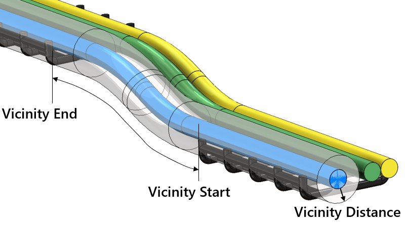
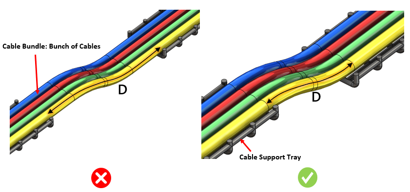

本ルールは、2つのサポート部品間における未支持ケーブルの長さを特定します。ルール構成では、ケーブルおよびサポート間で許容される最大間隔を設定するオプションを提供します。サポート部品は、DFMPro 設定ダイアログボックスの Vicinity（近傍）オプションにより識別できます。ケーブルに対して近傍（vicinity）制限値よりも近い部品は、サポート部品として評価されます。近傍（vicinity）制限範囲の外側にあるサポート部品はサポート部品として扱われず、最大間隔のルールチェックは実行されません。
ルール検証中は、ケーブル近傍に存在するサポート部品間の間隔をチェックします。
ケーブルのオーバーハング問題を回避し、十分な間隔でケーブルサポート部品を追加してください。本ルールは、ケーブルバンドルレベルでサポート部品間の最大間隔を特定します。最大間隔はケーブル長さに沿って算出されます。
オーバーハングやアンダーハングを避け、十分な距離間隔でサポート部品を配置してください。
ルール構成では、ケーブルバンドルおよび近傍（vicinity）値を設定するオプションを提供します。Cable、Cable Bundle、およびサポート部品の一覧の識別は、DFMPro Settings で構成できます。

入力 |
解釈 |
Cable |
属性値には、（スペース、-、_ を含まない）名前 "cable" のみを含めてください。 |
*Cable* |
属性値の名前に "cable" を含めてください。 |
*_Cable |
すべての属性値は "_cable" で終わる必要があります。 |

D = サポート間の最大距離
注記:
本ルールは、ワイヤハーネス内に存在するケーブル機能をサポートします。
ワイヤハーネス内に存在する各ケーブルは、サポート距離の検証のために個別に実行されます。
ケーブルまたはワイヤに導体がある場合、本ルールはサポートされません（以下の画像に示すとおり）。